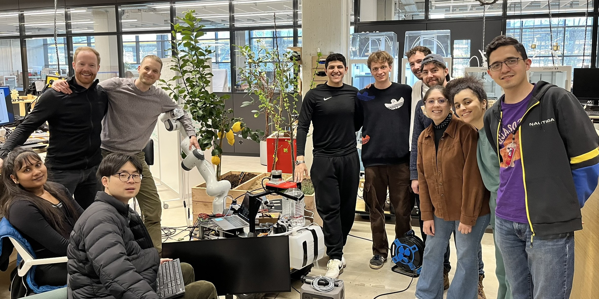

GrowBot: 🏆 First Prize at the robo.innovate Hackathon 2025 - An AI-Powered Plant Monitoring System
I participated in robo.innovate Hackathon 2025 organized by TUM Venture Labs, where our team won the first prize among 10 competing teams. Our project focused on agroforestry sensing and processing through artificial intelligence.
Through this project, we successfully integrated robotics, AI, and web technologies into a cohesive solution. My ability to develop practical applications for environmental monitoring was showcased, as was my skill in creating user-friendly interfaces for complex technical systems.
Our innovative solution consisted of:
- A robot capable of capturing images and collecting soil sensor data
- An AI system that analyzes the collected data to provide plant health assessments
- A comprehensive treatment plan generation system
- A web application interface for data visualization and robot status monitoring
The project aims to revolutionize plant monitoring in both urban and agricultural settings by:
- Creating an automated monitoring system for plants in cities and fields
- Enabling remote deployment of robots for automated plant care
- Providing real-time health assessments and treatment recommendations
- Making plant care more efficient and accessible through automation